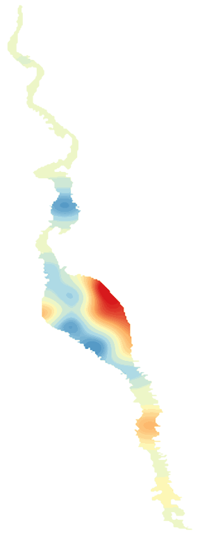

LakeScope › NV
Lake Mohave today
Updated 2026-11-14 - Atlas Labs
Clear water, 71°F water, level rising, 2 ft above normal, windy Saturday (20 mph SSE).
Water level
639.48 ft
Bureau of Reclamation - 2026-11-12
7-day trend: rising (+0.82 ft). Compared with normal for this date: +1.9 ft (same weeks, 2016-2025).
Water clarity and algae
Clear water Last clear view: a few days ago.
Surface temperature
71°F
seen from space on 2026-11-12

Weather, next 3 days
| Day | Sky | High / low | Wind | Rain |
|---|---|---|---|---|
| Saturday | Sunny | 72 / 60°F | 20 mph SSE | 2% |
| Sunday | Sunny | 72 / 61°F | 3 mph ENE | 0% |
| Monday | Mostly Sunny | 73 / 62°F | 10 mph SSE | 8% |
Sunrise 07:13 - sunset 17:32 - Waxing crescent. National Weather Service.
Get the LakeScope app: alerts and the 3-D view of Lake Mohave